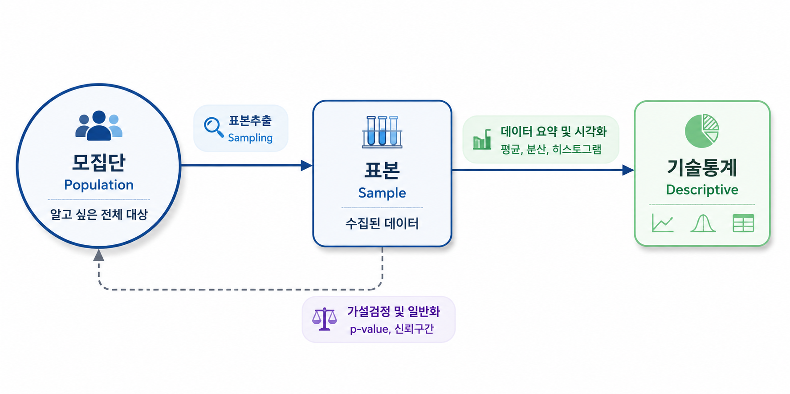
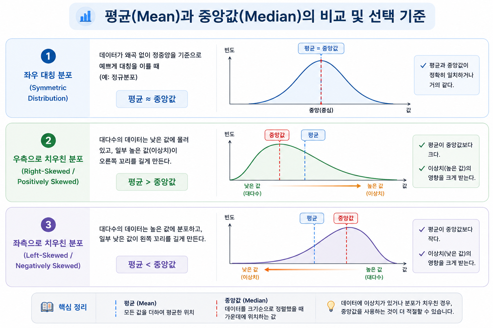
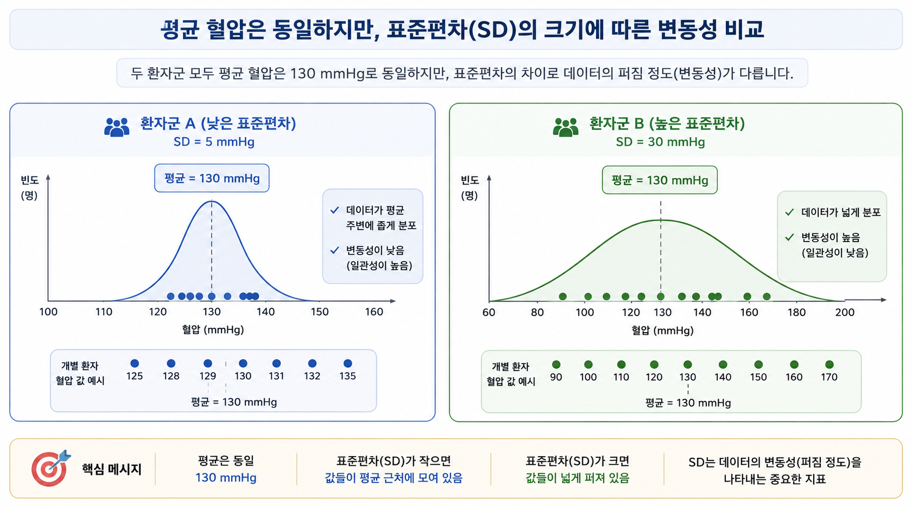
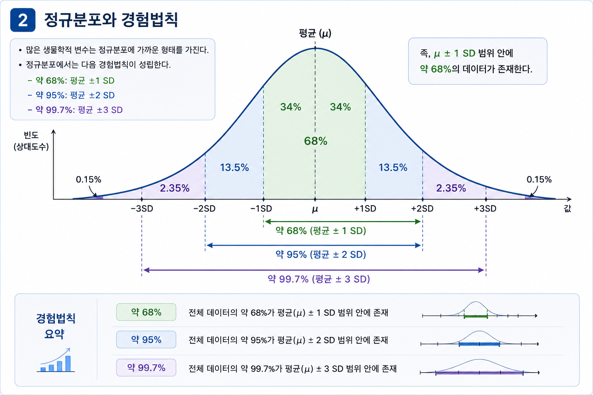
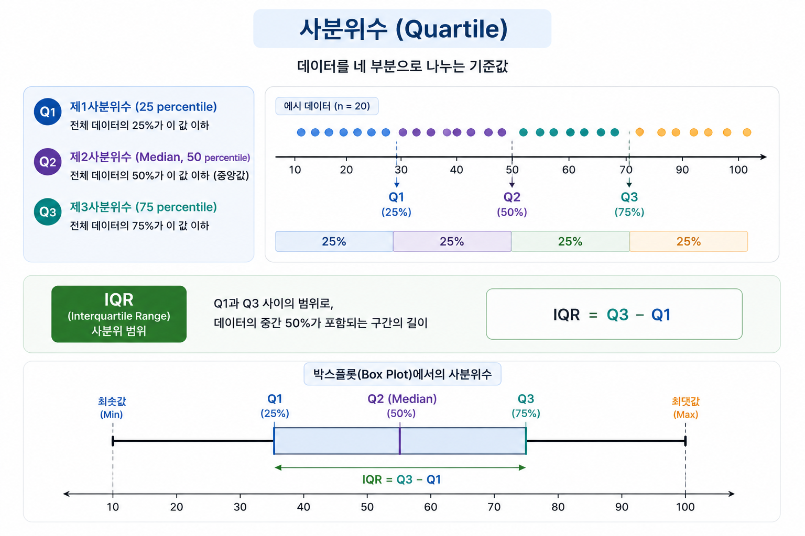
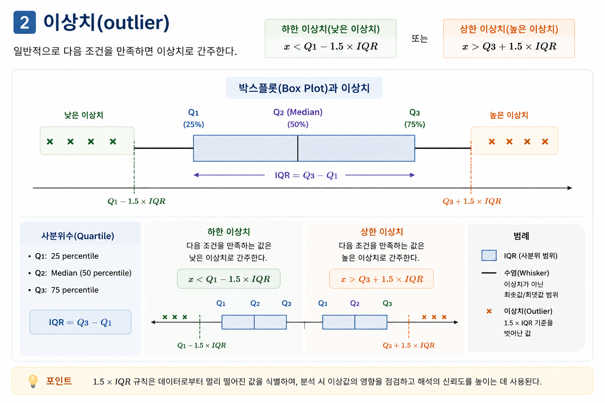
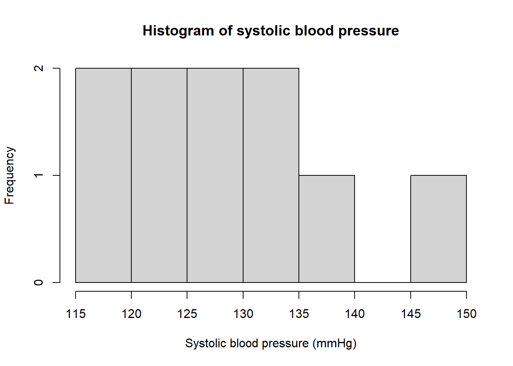
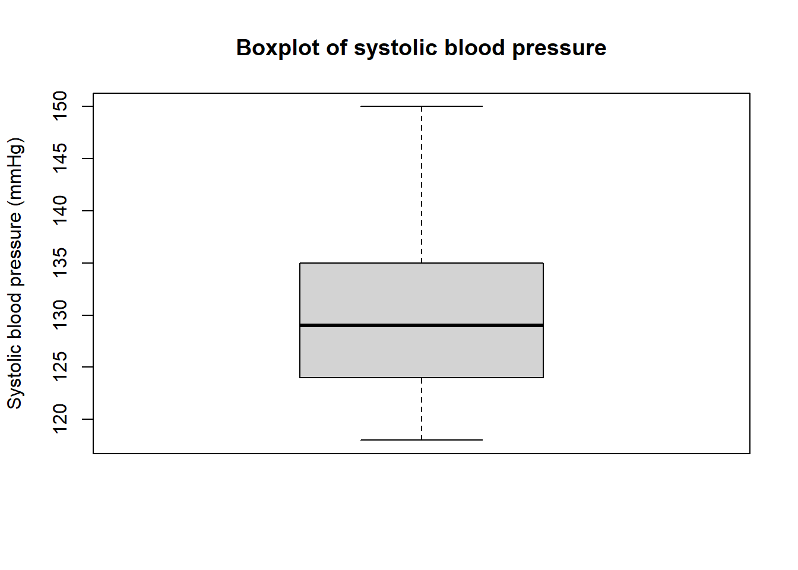

# 10명의 환자 수축기 혈압 자료
blood_pressure <- c(120, 130, 125, 140, 135, 128, 132, 150, 118, 124)
blood_pressure [1] 120 130 125 140 135 128 132 150 118 124기술통계(descriptive statistics)는 수집된 자료를 표, 그래프, 대표값, 산포도 지표로 요약하여 자료의 구조를 이해하는 과정이다.
의학·보건·생명과학 연구에서 자료는 대개 복잡하다. 예를 들어 환자 1,000명의 나이, 성별, 혈압, 혈당, 콜레스테롤, 체질량지수, 치료 반응 여부, 입원 기간, 생존 여부가 한꺼번에 수집될 수 있다. 이러한 원자료(raw data)를 그대로 바라보면 어떤 패턴이 있는지, 어떤 값이 특이한지, 어떤 변수가 분석에 적합한지 파악하기 어렵다.
기술통계는 다음 질문에 답하기 위한 첫 단계이다.
“이 자료는 어떤 모습을 하고 있는가?”
기술통계는 연구의 마지막 결론이 아니라, 더 깊은 통계 분석으로 들어가기 전에 반드시 수행해야 하는 자료 이해의 과정이다.
이번 장에서는 다음 세 가지 예제를 반복적으로 사용한다.
수축기 혈압은 연속형 변수이며, 비교적 대칭적인 분포를 보일 수 있다. 이 예제를 통해 평균, 표준편차, 정규분포, 경험법칙을 이해한다.
\[120,\quad 130,\quad 125,\quad 140,\quad 135\]
입원 기간은 0보다 작을 수 없고, 일부 환자가 매우 오래 입원할 수 있기 때문에 오른쪽으로 치우친 분포를 보이는 경우가 많다. 이 예제를 통해 중앙값과 IQR의 필요성을 이해한다.
\[1,\quad 2,\quad 3,\quad 5,\quad 14\]
공복혈당은 이상치 탐지와 임상적 해석을 함께 생각하기 좋은 변수이다. 이 예제를 통해 사분위수, IQR, Tukey의 울타리를 학습한다.
의생명 연구를 통해 수집된 원자료(raw data)는 수많은 숫자와 문자로 이루어져 있다. 원자료는 정보의 원천이지만, 그 자체로는 연구자가 원하는 결론을 직접 말해 주지 않는다.
예를 들어 환자 10명의 수축기 혈압이 다음과 같다고 하자.
\[120,\ 130,\ 125,\ 140,\ 135,\ 128,\ 132,\ 150,\ 118,\ 124\]
이 숫자들을 그대로 보는 것만으로는 다음 질문에 즉시 답하기 어렵다.
기술통계는 이러한 질문에 답하기 위해 원자료를 요약한다.
기술통계(descriptive statistics)는 자료의 주요 특성을 숫자와 그래프로 요약하고 설명하는 통계 방법이다.
기술통계는 크게 네 가지 역할을 한다.
| 역할 | 핵심 질문 | 대표 도구 |
|---|---|---|
| 중심 위치 요약 | 자료가 어디에 몰려 있는가? | 평균, 중앙값, 최빈값 |
| 퍼짐 정도 요약 | 자료가 얼마나 흩어져 있는가? | 분산, 표준편차, 범위, IQR |
| 분포 형태 확인 | 대칭인가, 치우쳤는가? | 히스토그램, 밀도곡선, Q-Q plot |
| 이상치 탐지 | 유난히 큰 값이나 작은 값이 있는가? | 상자그림, Tukey의 울타리 |
기술통계는 단순 계산이 아니라, 자료의 성격을 이해하고 이후 분석 방법을 결정하는 과정이다.
통계학은 크게 기술통계(descriptive statistics)와 추론통계(inferential statistics)로 나눌 수 있다.
두 방법은 서로 분리된 것이 아니라 연결되어 있다. 기술통계로 자료의 형태를 먼저 확인해야 적절한 추론통계 방법을 선택할 수 있다.

| 구분 | 기술통계 | 추론통계 |
|---|---|---|
| 관심 대상 | 표본자료 자체 | 모집단 또는 일반화된 결론 |
| 주요 질문 | 자료가 어떻게 생겼는가? | 관찰된 차이가 우연인가, 실제 효과인가? |
| 대표 방법 | 평균, 중앙값, 표준편차, 그래프 | 신뢰구간, p-value, 가설검정, 회귀분석 |
| 예시 | 신약군의 평균 혈압은 128 mmHg | 신약이 혈압을 유의하게 낮추는가? |
추론통계 분석을 바로 수행하기 전에 기술통계가 필요한 이유는 다음과 같다.
즉 기술통계는 모든 분석의 출발점이다.
기술통계를 수행할 때 가장 먼저 해야 할 일은 변수가 어떤 유형인지 확인하는 것이다. 변수의 유형에 따라 사용할 수 있는 요약 지표와 그래프가 달라진다.
| 변수 유형 | 설명 | 예 | 대표 요약 |
|---|---|---|---|
| 명목형 변수 | 순서가 없는 범주 | 성별, 혈액형, 질병 유무 | 빈도, 백분율 |
| 순서형 변수 | 순서가 있는 범주 | 통증 등급, 암 병기 | 빈도, 백분율, 중앙값 |
| 이산형 수치 변수 | 셀 수 있는 수치 | 입원 횟수, 부작용 개수 | 평균, 중앙값, 빈도 |
| 연속형 수치 변수 | 연속적으로 측정되는 수치 | 혈압, 혈당, 키, 체중 | 평균±SD 또는 중앙값[IQR] |
범주형 변수는 주로 빈도와 백분율로 요약하고, 연속형 변수는 분포 형태에 따라 평균과 표준편차 또는 중앙값과 IQR로 요약한다.
임상 논문의 Table 1은 연구 대상자의 기본 특성을 보여주는 표이다. Table 1은 단순한 장식이 아니라 연구 집단이 어떤 사람들로 구성되어 있는지 보여주는 핵심 정보이다.
| 변수 | 자료 유형 | 권장 표기 |
|---|---|---|
| 나이 | 연속형, 대칭적 분포 | 평균 ± 표준편차 |
| BMI | 연속형, 대칭적 분포 가능 | 평균 ± 표준편차 |
| 입원 기간 | 연속형, 오른쪽 치우침 흔함 | 중앙값 [Q1, Q3] |
| 의료비 | 연속형, 심한 오른쪽 치우침 | 중앙값 [Q1, Q3] |
| 성별 | 범주형 | n (%) |
| 당뇨 여부 | 범주형 | n (%) |
| 암 병기 | 순서형 범주 | n (%) |
평균 ± 표준편차중앙값 [사분위간 범위]빈도수 (백분율)중심 위치(measure of central tendency)는 자료가 전체적으로 어디에 몰려 있는지를 나타내는 값이다. 대표적인 중심 위치 지표는 평균, 중앙값, 최빈값이다.
| 지표 | 의미 | 장점 | 단점 |
|---|---|---|---|
| 평균 | 모든 값을 더해 개수로 나눈 값 | 수학적으로 다루기 좋음 | 이상치에 민감함 |
| 중앙값 | 정렬했을 때 가운데 값 | 이상치에 강인함 | 수학적 조작이 평균보다 어려움 |
| 최빈값 | 가장 자주 나타나는 값 | 범주형 자료에도 사용 가능 | 유일하지 않을 수 있음 |
평균(mean)은 모든 데이터 값을 더한 뒤 데이터 개수로 나눈 값이다. 표본평균은 보통 \(\bar{x}\)로 표기한다.
\[\bar{x}=\frac{1}{n}\sum_{i=1}^{n}x_i\]
여기서
고혈압 환자 5명의 수축기 혈압이 다음과 같다고 하자.
\[120,\quad 130,\quad 125,\quad 140,\quad 135\]
평균은 다음과 같다.
\[\bar{x}=\frac{120+130+125+140+135}{5}\]
\[=\frac{650}{5}=130\ \text{mmHg}\]
따라서 이 환자 5명의 평균 수축기 혈압은 130 mmHg이다.
평균은 자료의 무게중심으로 해석할 수 있다. 평균보다 큰 값과 작은 값의 편차를 모두 더하면 항상 0이 된다.
\[\sum_{i=1}^{n}(x_i-\bar{x})=0\]
표본평균의 정의에 의해,
\[\bar{x}=\frac{1}{n}\sum_{i=1}^{n}x_i\]
따라서,
\[\sum_{i=1}^{n}(x_i-\bar{x}) = \sum_{i=1}^{n}x_i-\sum_{i=1}^{n}\bar{x}\]
\(\bar{x}\)는 상수이므로,
\[\sum_{i=1}^{n}\bar{x}=n\bar{x}\]
따라서,
\[\sum_{i=1}^{n}(x_i-\bar{x}) = \sum_{i=1}^{n}x_i-n\bar{x}\]
그런데 \(n\bar{x}=\sum_{i=1}^{n}x_i\)이므로,
\[\sum_{i=1}^{n}(x_i-\bar{x})=0\]
즉 평균은 모든 관찰값의 편차 합을 0으로 만드는 중심점이다.
평균은 모든 관찰값을 사용하기 때문에 자료 전체의 정보를 반영한다. 또한 이후 배우는 분산, 표준편차, 표준오차, t-test, 회귀분석 등 많은 통계 방법의 기초가 된다.
하지만 평균은 이상치(outlier)에 매우 민감하다.
원래 혈압 자료가 다음과 같다고 하자.
\[120,\quad 130,\quad 125,\quad 140,\quad 135\]
평균은 130 mmHg이다.
이번에는 마지막 값이 측정 오류 또는 극단적인 임상 상황으로 240 mmHg였다고 하자.
\[120,\quad 130,\quad 125,\quad 140,\quad 240\]
평균은 다음과 같다.
\[\bar{x}=\frac{120+130+125+140+240}{5} = \frac{755}{5}=151\ \text{mmHg}\]
대부분의 환자는 120–140 mmHg 사이에 있지만, 한 명의 극단값 때문에 평균은 151 mmHg로 크게 증가한다. 이처럼 평균은 자료가 대칭적이고 이상치가 적을 때 가장 적절하다.
중앙값(median)은 자료를 크기순으로 정렬했을 때 가운데 위치하는 값이다. 중앙값은 이상치의 영향을 적게 받기 때문에 치우친 분포에서 유용하다.
자료 개수가 홀수이면 정중앙에 있는 값이 중앙값이다. 위치는 다음과 같다.
\[\frac{n+1}{2}\text{번째 값}\]
예를 들어 입원 기간 자료가 다음과 같다고 하자.
\[3,\quad 1,\quad 14,\quad 2,\quad 5\]
먼저 오름차순으로 정렬한다.
\[1,\quad 2,\quad \mathbf{3},\quad 5,\quad 14\]
\(n=5\)이므로 중앙값은 \(\frac{5+1}{2}=3\)번째 값이다. 따라서 중앙값은 3일이다.
자료 개수가 짝수이면 가운데 두 값의 평균이 중앙값이다.
예를 들어 자료가 다음과 같다고 하자.
\[3,\quad 1,\quad 14,\quad 2,\quad 5,\quad 7\]
정렬하면 다음과 같다.
\[1,\quad 2,\quad \mathbf{3},\quad \mathbf{5},\quad 7,\quad 14\]
가운데 두 값은 3과 5이므로 중앙값은 다음과 같다.
\[\text{median}=\frac{3+5}{2}=4\ \text{일}\]
중앙값은 값의 크기보다 순서에 의존한다. 따라서 극단값이 있더라도 중앙값은 크게 흔들리지 않는다.
예를 들어 다음 자료를 생각해 보자.
\[1,\quad 2,\quad 3,\quad 5,\quad 14\]
평균은 다음과 같다.
\[\bar{x}=\frac{1+2+3+5+14}{5}=5\]
중앙값은 3이다.
이제 마지막 값 14가 140으로 바뀌었다고 하자.
\[1,\quad 2,\quad 3,\quad 5,\quad 140\]
평균은 다음과 같다.
\[\bar{x}=\frac{1+2+3+5+140}{5}=30.2\]
하지만 중앙값은 여전히 3이다.
\[\text{median}=3\]
따라서 생존 기간, 입원 기간, 의료비처럼 오른쪽 꼬리가 긴 자료에서는 평균보다 중앙값이 더 적절한 대표값일 수 있다.
최빈값(mode)은 자료에서 가장 자주 등장하는 값이다. 최빈값은 수치형 자료뿐 아니라 범주형 자료에도 사용할 수 있다.
예를 들어 혈액형 자료가 다음과 같다고 하자.
| 혈액형 | 인원수 |
|---|---|
| A형 | 32 |
| B형 | 27 |
| O형 | 35 |
| AB형 | 6 |
가장 많은 혈액형은 O형이므로 최빈값은 O형이다.
최빈값은 범주형 자료의 대표 범주를 설명할 때 유용하다. 다만 수치형 자료에서는 최빈값이 없거나 여러 개일 수 있다.
평균과 중앙값의 상대적 위치를 보면 자료의 분포 형태를 짐작할 수 있다.
| 분포 형태 | 특징 | 평균과 중앙값의 관계 | 예 |
|---|---|---|---|
| 대칭 분포 | 좌우가 비슷함 | 평균 ≈ 중앙값 | 키, 일부 혈압 자료 |
| 오른쪽 치우침 | 오른쪽 꼬리가 김 | 평균 > 중앙값 | 입원 기간, 의료비, 생존 기간 |
| 왼쪽 치우침 | 왼쪽 꼬리가 김 | 평균 < 중앙값 | 만삭 임신 주수 일부 자료 |
자료가 좌우 대칭이면 평균과 중앙값은 비슷하다.
\[\text{mean} \approx \text{median}\]
오른쪽으로 치우친 분포에서는 일부 매우 큰 값이 평균을 오른쪽으로 끌어당긴다.
\[\text{mean} > \text{median}\]
의학 자료에서는 입원 기간, 의료비, 중환자실 재원 기간, 생존 기간이 오른쪽으로 치우치는 경우가 많다.
왼쪽으로 치우친 분포에서는 일부 매우 작은 값이 평균을 왼쪽으로 끌어당긴다.
\[\text{mean} < \text{median}\]

| 상황 | 권장 중심 지표 | 함께 제시할 산포 지표 |
|---|---|---|
| 대칭적 연속형 자료 | 평균 | 표준편차 |
| 정규분포에 가까운 자료 | 평균 | 표준편차 |
| 오른쪽 또는 왼쪽으로 치우친 자료 | 중앙값 | IQR |
| 이상치가 많은 자료 | 중앙값 | IQR |
| 순서형 자료 | 중앙값 또는 빈도 | IQR 또는 빈도 |
| 명목형 자료 | 최빈값 또는 빈도 | 백분율 |
산포도(measure of variability 또는 dispersion)는 자료가 중심으로부터 얼마나 넓게 퍼져 있는지를 나타낸다.
두 환자군의 평균 혈압이 모두 130 mmHg라고 하더라도 다음 두 경우는 임상적으로 매우 다르다.
| 환자군 | 혈압 자료 | 평균 | 해석 |
|---|---|---|---|
| A군 | 126, 128, 130, 132, 134 | 130 | 대부분 평균 근처 |
| B군 | 90, 110, 130, 150, 170 | 130 | 환자 간 변동이 큼 |
평균만 보면 두 군은 같지만, 퍼짐 정도는 완전히 다르다. 따라서 평균과 함께 산포도 지표를 제시해야 한다.
범위(range)는 최댓값에서 최솟값을 뺀 값이다.
\[\text{Range}=\max(x)-\min(x)\]
예를 들어 혈압 자료가 다음과 같다고 하자.
\[120,\quad 130,\quad 125,\quad 140,\quad 135\]
최솟값은 120, 최댓값은 140이므로 범위는 다음과 같다.
\[\text{Range}=140-120=20\]
범위는 계산하기 쉽지만, 최솟값과 최댓값 두 개에만 의존하기 때문에 이상치에 매우 민감하다.
각 관찰값이 평균으로부터 얼마나 떨어져 있는지를 편차(deviation)라고 한다.
\[\text{deviation}_i=x_i-\bar{x}\]
예를 들어 혈압 자료가 다음과 같고 평균이 130이라고 하자.
\[120,\quad 130,\quad 125,\quad 140,\quad 135\]
각 편차는 다음과 같다.
| 관찰값 \(x_i\) | 편차 \(x_i-\bar{x}\) |
|---|---|
| 120 | -10 |
| 130 | 0 |
| 125 | -5 |
| 140 | 10 |
| 135 | 5 |
편차의 합은 항상 0이다.
\[-10+0-5+10+5=0\]
따라서 편차를 그대로 더해서는 자료의 퍼짐을 측정할 수 없다. 이 문제를 해결하기 위해 편차를 제곱한다.
표본분산(sample variance)은 각 관찰값이 평균에서 얼마나 떨어져 있는지를 제곱하여 평균적으로 계산한 값이다.
\[s^2=\frac{1}{n-1}\sum_{i=1}^{n}(x_i-\bar{x})^2\]
여기서
표본분산을 계산할 때 \(n\)이 아니라 \(n-1\)로 나누는 이유는 표본자료로 모집단의 분산을 추정하기 때문이다.
표본평균 \(\bar{x}\)는 표본자료에서 계산된다. 일단 표본평균이 정해지면 \(n\)개의 편차 중 마지막 하나는 자유롭게 정해질 수 없다. 편차의 합은 항상 0이어야 하기 때문이다.
예를 들어 관찰값이 5개라면 편차 5개가 있지만, 앞의 4개 편차가 정해지면 마지막 편차는 자동으로 결정된다.
\[\sum_{i=1}^{n}(x_i-\bar{x})=0\]
따라서 독립적으로 변할 수 있는 편차의 개수는 \(n\)이 아니라 \(n-1\)이다. 이를 자유도라고 한다.
표본평균은 표본자료를 사용해서 계산한 값이다. 같은 자료에서 계산한 평균을 기준으로 다시 퍼짐을 계산하면 실제 모집단의 퍼짐보다 조금 작게 추정되는 경향이 있다. \(n-1\)로 나누면 이러한 과소추정을 보정할 수 있다.
분산은 편차를 제곱하여 계산하기 때문에 단위도 제곱된다. 예를 들어 혈압의 단위가 mmHg이면 분산의 단위는 \(\text{mmHg}^2\)가 된다.
해석을 쉽게 하기 위해 분산의 제곱근을 취한 것이 표준편차(standard deviation)이다.
\[s=\sqrt{s^2} = \sqrt{\frac{1}{n-1}\sum_{i=1}^{n}(x_i-\bar{x})^2}\]
표준편차는 원자료와 같은 단위를 가지므로 임상적으로 해석하기 쉽다.
혈압 자료가 다음과 같다고 하자.
\[120,\quad 130,\quad 125,\quad 140,\quad 135\]
평균은 130이다.
| 환자 | 혈압 \(x_i\) | 편차 \(x_i-\bar{x}\) | 편차 제곱 \((x_i-\bar{x})^2\) |
|---|---|---|---|
| 1 | 120 | -10 | 100 |
| 2 | 130 | 0 | 0 |
| 3 | 125 | -5 | 25 |
| 4 | 140 | 10 | 100 |
| 5 | 135 | 5 | 25 |
| 합계 | 650 | 0 | 250 |
표본분산은 다음과 같다.
\[s^2=\frac{250}{5-1}=\frac{250}{4}=62.5\]
표본표준편차는 다음과 같다.
\[s=\sqrt{62.5}\approx 7.91\ \text{mmHg}\]
따라서 이 자료의 평균은 130 mmHg이고 표준편차는 약 7.91 mmHg이다.

서로 단위가 다르거나 평균 수준이 다른 변수의 상대적 변동성을 비교할 때는 변동계수(coefficient of variation, CV)를 사용할 수 있다.
\[CV=\frac{s}{\bar{x}}\times 100\%\]
예를 들어 평균 혈압이 130 mmHg, 표준편차가 7.91 mmHg이면 변동계수는 다음과 같다.
\[CV=\frac{7.91}{130}\times 100\%\approx 6.1\%\]
변동계수는 평균에 비해 표준편차가 얼마나 큰지를 백분율로 표현한다. 단, 평균이 0에 가깝거나 음수가 될 수 있는 변수에서는 해석이 부적절할 수 있다.
정규분포(normal distribution)는 평균을 중심으로 좌우 대칭인 종 모양의 분포이다. 키, 일부 혈압, 실험 측정오차처럼 여러 작은 요인이 더해져 만들어지는 연속형 변수에서 자주 관찰된다.
정규분포의 핵심은 평균과 표준편차만으로 분포의 위치와 퍼짐을 요약할 수 있다는 점이다.
\[X \sim N(\mu,\sigma^2)\]
여기서 \(\mu\)는 평균, \(\sigma\)는 표준편차, \(\sigma^2\)는 분산이다.
자료가 정규분포를 따른다면 평균과 표준편차를 이용하여 자료가 어느 범위에 얼마나 포함되는지 대략적으로 알 수 있다. 이를 경험법칙(empirical rule) 또는 68-95-99.7 규칙이라고 한다.
| 구간 | 포함되는 비율 |
|---|---|
| \(\mu \pm 1\sigma\) | 약 68% |
| \(\mu \pm 2\sigma\) | 약 95% |
| \(\mu \pm 3\sigma\) | 약 99.7% |
수식으로는 다음과 같다.
\[P(\mu-\sigma \leq X \leq \mu+\sigma)\approx 0.68\]
\[P(\mu-2\sigma \leq X \leq \mu+2\sigma)\approx 0.95\]
\[P(\mu-3\sigma \leq X \leq \mu+3\sigma)\approx 0.997\]

성인의 수축기 혈압이 평균 120 mmHg, 표준편차 10 mmHg인 정규분포를 따른다고 하자.
\[X \sim N(120,10^2)\]
\[120\pm 10 = 110\sim 130\]
약 68%의 사람은 혈압이 110–130 mmHg 사이에 있다.
\[120\pm 2(10)=100\sim 140\]
약 95%의 사람은 혈압이 100–140 mmHg 사이에 있다.
\[120\pm 3(10)=90\sim 150\]
약 99.7%의 사람은 혈압이 90–150 mmHg 사이에 있다.
평균 ± 2 표준편차가 대략 95%를 포함한다고 해서 모든 임상 정상범위가 단순히 이 방식으로 결정되는 것은 아니다. 실제 임상 기준은 질병 위험, 검사 민감도와 특이도, 치료 결정 기준, 전문가 지침을 함께 고려하여 정해진다.
사분위수(quartiles)는 자료를 크기순으로 정렬했을 때 전체를 네 부분으로 나누는 기준값이다.
| 기호 | 이름 | 의미 |
|---|---|---|
| Q1 | 제1사분위수 | 하위 25% 지점 |
| Q2 | 제2사분위수 | 하위 50% 지점, 중앙값 |
| Q3 | 제3사분위수 | 하위 75% 지점 |
사분위수는 자료의 위치를 이해하는 데 유용하며, 특히 치우친 자료에서 중요하다.
사분위간 범위(interquartile range, IQR)는 가운데 50% 자료가 차지하는 범위이다.
\[IQR=Q3-Q1\]
IQR은 상위 25%와 하위 25%의 극단값을 제외하고 계산하므로 이상치에 강인하다.

입원 기간 자료가 다음과 같다고 하자.
\[1,\quad 2,\quad 3,\quad 5,\quad 7,\quad 14,\quad 20\]
이 자료에서 중앙값은 5이다. 하위 절반과 상위 절반을 기준으로 사분위수를 구하면 대략 다음과 같다.
\[Q1=2,\quad Q2=5,\quad Q3=14\]
따라서 IQR은 다음과 같다.
\[IQR=Q3-Q1=14-2=12\]
이 자료는 중앙값 [Q1, Q3] 형태로 다음과 같이 보고할 수 있다.
\[5\ [2,14]\ \text{일}\]
또는 중앙값 (IQR) 형태로 다음과 같이 보고할 수 있다.
\[5\ (12)\ \text{일}\]
| 항목 | 표준편차 | IQR |
|---|---|---|
| 기준 | 평균 주변의 퍼짐 | 중앙값 주변 가운데 50% 범위 |
| 이상치 영향 | 큼 | 작음 |
| 적합한 자료 | 대칭적 자료 | 치우친 자료 |
| 짝이 되는 중심 지표 | 평균 | 중앙값 |
| 보고 예 | \(54.3\pm 8.2\) | \(4.0\ [2.0,7.5]\) |
이상치(outlier)는 다른 관찰값들과 비교했을 때 유난히 크거나 작은 값이다. 이상치는 단순한 오류일 수도 있고, 실제로 중요한 임상적 신호일 수도 있다.
예를 들어 수축기 혈압 120, 130, 125, 140 사이에 240이라는 값이 있다면 이 값은 이상치일 가능성이 있다. 하지만 이 값이 반드시 오류라는 뜻은 아니다. 고혈압 위기 환자의 실제 수치일 수도 있다.
이상치를 탐지하는 대표적인 방법은 Tukey의 \(1.5\times IQR\) 법칙이다.
하한선은 다음과 같다.
\[\text{Lower fence}=Q1-1.5\times IQR\]
상한선은 다음과 같다.
\[\text{Upper fence}=Q3+1.5\times IQR\]
관찰값 \(x\)가 다음 조건 중 하나를 만족하면 이상치 후보로 본다.
\[x< Q1-1.5\times IQR\]
또는
\[x> Q3+1.5\times IQR\]

어느 병원의 당뇨병 환자 공복혈당 자료에서 다음과 같은 사분위수가 계산되었다고 하자.
\[Q1=100,\quad Q3=140\]
IQR은 다음과 같다.
\[IQR=140-100=40\]
하한선은 다음과 같다.
\[100-1.5(40)=100-60=40\]
상한선은 다음과 같다.
\[140+1.5(40)=140+60=200\]
따라서 이 자료에서는 공복혈당이 40 mg/dL 미만이거나 200 mg/dL 초과인 값은 이상치 후보이다.
이상치를 발견했다고 해서 바로 삭제하면 안 된다. 이상치는 다음 순서로 검토해야 한다.
입력 오류 확인
예: 혈압 120을 1200으로 잘못 입력했는지 확인한다.
측정 오류 확인
검사 장비 오류, 단위 변환 오류, 표본 오염 여부를 확인한다.
임상적 타당성 확인
실제 중증 환자 또는 특수한 임상 상황인지 확인한다.
분석 전략 결정
오류이면 수정하거나 제외할 수 있다. 실제 값이면 함부로 삭제하지 않고 중앙값, IQR, 변환, 비모수 방법, 민감도 분석 등을 고려한다.
분석 결과가 마음에 들지 않는다는 이유로 이상치를 제거해서는 안 된다. 이상치 제거 기준은 분석 전에 정하거나, 적어도 연구 방법에 투명하게 보고해야 한다.
기술통계량은 자료를 숫자로 요약하지만, 숫자만으로는 분포의 모양을 충분히 이해하기 어렵다. 같은 평균과 표준편차를 가진 자료라도 실제 분포는 매우 다를 수 있다.
그래프는 다음을 확인하는 데 유용하다.
히스토그램(histogram)은 연속형 자료의 분포를 구간별 빈도로 나타낸 그래프이다.
히스토그램을 통해 다음을 확인할 수 있다.
상자그림(boxplot)은 중앙값, Q1, Q3, IQR, 이상치를 한 번에 보여주는 그래프이다.
상자그림의 구성은 다음과 같다.
| 요소 | 의미 |
|---|---|
| 상자 가운데 선 | 중앙값 |
| 상자 아래쪽 | Q1 |
| 상자 위쪽 | Q3 |
| 상자 높이 | IQR |
| 수염 | 이상치가 아닌 범위 |
| 점 | 이상치 후보 |
상자그림은 여러 집단의 분포를 비교할 때 특히 유용하다.
막대그래프(bar plot)는 범주형 변수의 빈도 또는 백분율을 나타낼 때 사용한다.
예를 들어 치료 반응 여부를 다음과 같이 요약할 수 있다.
| 치료 반응 | 환자 수 | 백분율 |
|---|---|---|
| 반응 | 70 | 70% |
| 무반응 | 30 | 30% |
이런 자료는 평균이나 표준편차로 요약하지 않고 빈도와 백분율로 요약해야 한다.
이번 실습에서는 R을 이용하여 다음 작업을 수행한다.
# 10명의 환자 수축기 혈압 자료
blood_pressure <- c(120, 130, 125, 140, 135, 128, 132, 150, 118, 124)
blood_pressure [1] 120 130 125 140 135 128 132 150 118 124mean(blood_pressure)[1] 130.2median(blood_pressure)[1] 129var(blood_pressure)[1] 93.06667sd(blood_pressure)[1] 9.647107min(blood_pressure)[1] 118max(blood_pressure)[1] 150range(blood_pressure)[1] 118 150summary() 함수는 최솟값, 제1사분위수, 중앙값, 평균, 제3사분위수, 최댓값을 한 번에 보여준다.
summary(blood_pressure) Min. 1st Qu. Median Mean 3rd Qu. Max.
118.0 124.2 129.0 130.2 134.2 150.0 quantile(blood_pressure) 0% 25% 50% 75% 100%
118.00 124.25 129.00 134.25 150.00 IQR(blood_pressure)[1] 10특정 분위수를 지정할 수도 있다.
quantile(blood_pressure, probs = c(0.25, 0.5, 0.75)) 25% 50% 75%
124.25 129.00 134.25 Tukey의 울타리를 R로 계산해 보자.
q1 <- quantile(blood_pressure, 0.25)
q3 <- quantile(blood_pressure, 0.75)
iqr <- IQR(blood_pressure)
lower_fence <- q1 - 1.5 * iqr
upper_fence <- q3 + 1.5 * iqr
lower_fence 25%
109.25 upper_fence 75%
149.25 이상치 후보를 직접 찾아낼 수 있다.
blood_pressure[blood_pressure < lower_fence | blood_pressure > upper_fence][1] 150hist(
blood_pressure,
main = "Histogram of systolic blood pressure",
xlab = "Systolic blood pressure (mmHg)",
ylab = "Frequency",
breaks = 6
)
히스토그램은 혈압 값이 어느 구간에 많이 모여 있는지 보여준다.
boxplot(
blood_pressure,
main = "Boxplot of systolic blood pressure",
ylab = "Systolic blood pressure (mmHg)"
)
상자그림은 중앙값, IQR, 이상치 후보를 한 번에 보여준다.
이번에는 혈압 자료에 극단값 240을 추가해 보자.
bp_outlier <- c(120, 130, 125, 140, 135, 128, 132, 150, 118, 240)
mean(bp_outlier)[1] 141.8median(bp_outlier)[1] 131sd(bp_outlier)[1] 35.76093IQR(bp_outlier)[1] 13원래 자료와 이상치가 있는 자료를 비교하면 평균과 표준편차가 이상치에 더 크게 영향을 받는 것을 확인할 수 있다.
data.frame(
dataset = c("Original", "With outlier"),
mean = c(mean(blood_pressure), mean(bp_outlier)),
median = c(median(blood_pressure), median(bp_outlier)),
sd = c(sd(blood_pressure), sd(bp_outlier)),
IQR = c(IQR(blood_pressure), IQR(bp_outlier))
) dataset mean median sd IQR
1 Original 130.2 129 9.647107 10
2 With outlier 141.8 131 35.760935 13치료 반응 여부 자료를 만들어 보자.
response <- c(
"Response", "Response", "No response", "Response", "No response",
"Response", "Response", "Response", "No response", "Response"
)
response [1] "Response" "Response" "No response" "Response" "No response"
[6] "Response" "Response" "Response" "No response" "Response" 빈도표는 table()로 계산한다.
table(response)response
No response Response
3 7 백분율은 prop.table()을 사용한다.
prop.table(table(response)) * 100response
No response Response
30 70 patient_data <- data.frame(
id = 1:10,
sex = c("F", "M", "F", "M", "F", "M", "F", "M", "F", "M"),
age = c(52, 61, 47, 70, 58, 63, 55, 66, 49, 72),
sbp = blood_pressure,
response = response
)
patient_data id sex age sbp response
1 1 F 52 120 Response
2 2 M 61 130 Response
3 3 F 47 125 No response
4 4 M 70 140 Response
5 5 F 58 135 No response
6 6 M 63 128 Response
7 7 F 55 132 Response
8 8 M 66 150 Response
9 9 F 49 118 No response
10 10 M 72 124 Responsesummary(patient_data) id sex age sbp response
Min. : 1.00 Length :10 Min. :47.00 Min. :118.0 Length :10
1st Qu.: 3.25 N.unique : 2 1st Qu.:52.75 1st Qu.:124.2 N.unique : 2
Median : 5.50 N.blank : 0 Median :59.50 Median :129.0 N.blank : 0
Mean : 5.50 Min.nchar: 1 Mean :59.30 Mean :130.2 Min.nchar: 8
3rd Qu.: 7.75 Max.nchar: 1 3rd Qu.:65.25 3rd Qu.:134.2 Max.nchar:11
Max. :10.00 Max. :72.00 Max. :150.0 연속형 변수는 평균과 표준편차로 요약할 수 있다.
mean(patient_data$age)[1] 59.3sd(patient_data$age)[1] 8.615877mean(patient_data$sbp)[1] 130.2sd(patient_data$sbp)[1] 9.647107범주형 변수는 빈도와 백분율로 요약한다.
table(patient_data$sex)
F M
5 5 prop.table(table(patient_data$sex)) * 100
F M
50 50 table(patient_data$response)
No response Response
3 7 prop.table(table(patient_data$response)) * 100
No response Response
30 70 성별에 따라 혈압 평균이 다른지 간단히 요약해 보자.
tapply(patient_data$sbp, patient_data$sex, mean) F M
126.0 134.4 tapply(patient_data$sbp, patient_data$sex, sd) F M
7.382412 10.526158 치료 반응 여부에 따라 연령을 요약할 수도 있다.
tapply(patient_data$age, patient_data$response, median)No response Response
49 63 tapply(patient_data$age, patient_data$response, IQR)No response Response
5.5 10.0 table1 <- data.frame(
variable = c("Age", "Systolic blood pressure"),
mean = c(mean(patient_data$age), mean(patient_data$sbp)),
sd = c(sd(patient_data$age), sd(patient_data$sbp)),
median = c(median(patient_data$age), median(patient_data$sbp)),
IQR = c(IQR(patient_data$age), IQR(patient_data$sbp))
)
table1 variable mean sd median IQR
1 Age 59.3 8.615877 59.5 12.5
2 Systolic blood pressure 130.2 9.647107 129.0 10.0실제 논문에서는 변수의 분포를 확인한 뒤 평균±표준편차 또는 중앙값[IQR] 중 적절한 형식을 선택해야 한다.
평균은 중심 위치를 나타내지만, 자료의 퍼짐이나 이상치 여부는 알려주지 않는다. 평균이 같아도 표준편차가 다르면 자료의 해석은 달라진다.
연속형 변수라도 분포가 심하게 치우쳐 있으면 평균±표준편차보다 중앙값[IQR]이 더 적절하다.
이상치는 오류일 수도 있지만 중요한 임상 신호일 수도 있다. 삭제 전에 원자료와 임상적 타당성을 확인해야 한다.
기술통계는 연구 집단을 이해하고 분석 방법을 결정하는 핵심 단계이다. p-value보다 먼저 확인해야 하는 것이 자료의 구조이다.